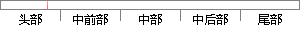

状态寄存器有1个当前程序状态寄存器CPSR，5个备份程序状态寄存器SPSR，分别用于5种工作模式，用户模式和系统模式没有备份程序状态寄存器。
片段位置图

相似结果
相似片段：处理器模式和工作状态;包含31个通用寄存器和6个状态...程序调用指令时,R14中得到R15(程序计数器PC)的备份...ARM7TDMI体系结构包含一个当前程序状态寄存器CPSR(...
| 标题 | 《32位RISC处理器研究及实现》 |
| 对比库 | 中国学位论文全文数据库 |
| 作者 | 吴艳 |
| 机构 | 东南大学 |
| 分类 | 微电子学与固体电子学 |
| 年份 | 2006 |
| 相似率 | 65.62% （轻度抄袭） |
※ 片段修改建议 ※
近似词参考：- 分别：别离 划分 离别
- 系统：体系
- 状态：状况
- 程序：法式 步伐
- 工作：事情
系统自动生成语句： 状况寄存器有1个当前法式状况寄存器CPSR，5个备份法式状况寄存器SPSR，别离用于5种事情模式，用户模式和体系模式没有备份法式状况寄存器。
注：本片段修改建议为系统自动生成，仅供参考。